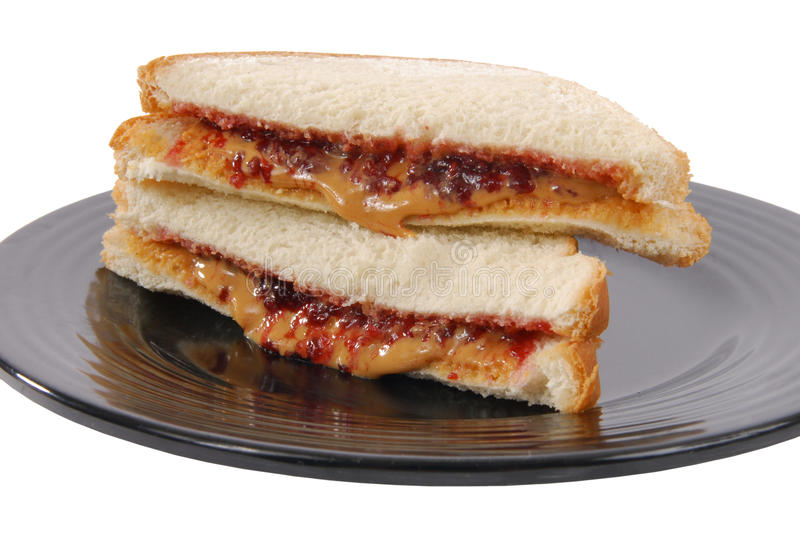

Peanut Butter and Jelly Sandwich recipe

Description
This is a standard recipe for a good ol' fashioned
peanut butter and jelly sandwich.
Put two slices of bread side by side on a large plate.
Using a knife, spread peanut butter on one slice and then spread jelly on another slice.
Then put them together.
Ingredients
- Peanut Butter
- Jelly
- Two Slices of Bread
- (Optional)Butter
Steps
- Put 2 slices of bread side by side on a large plate.
- Using a butter knife, spread peanut butter on one slice.
- Spread jelly on the other slice.
- Put both slices together.
- Optional step #1. Lightly toast bread before spreading on toppings.
- Optional step #2. Add butter to recipe.
The jelly side would be recommended for this step.